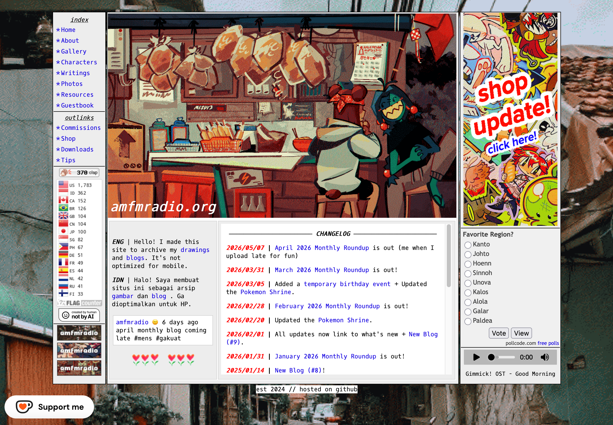
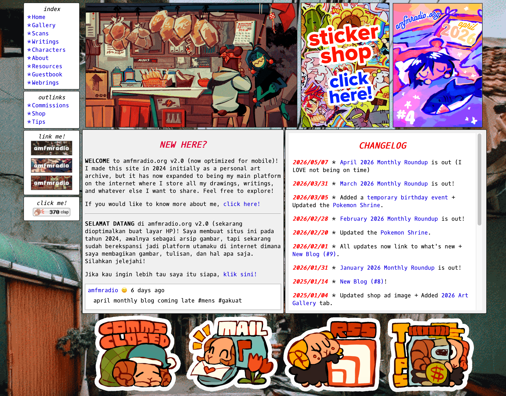
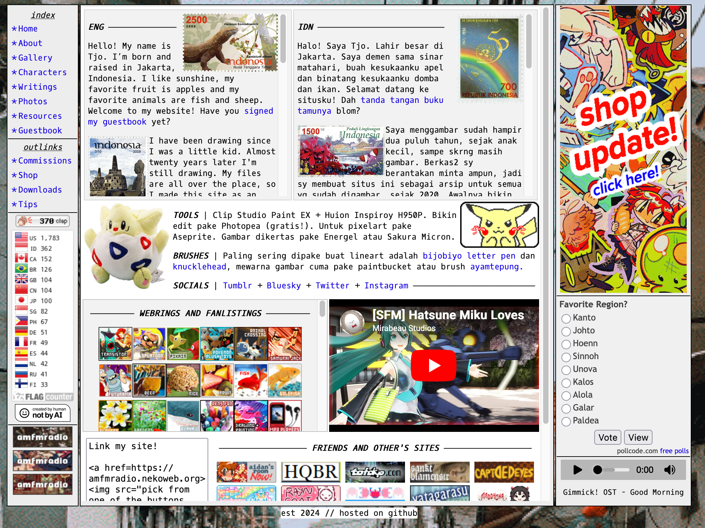
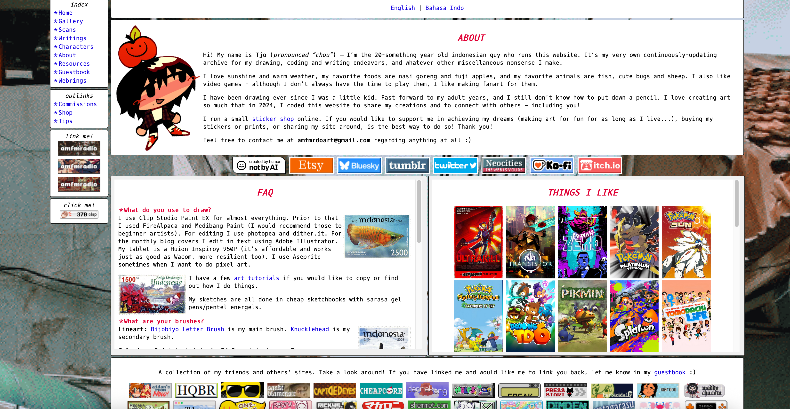
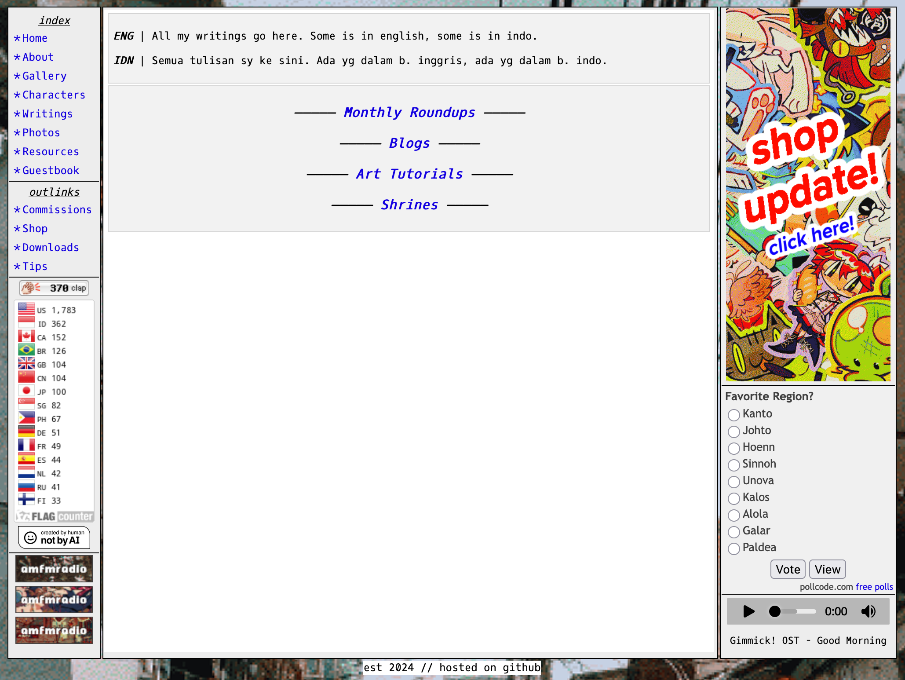
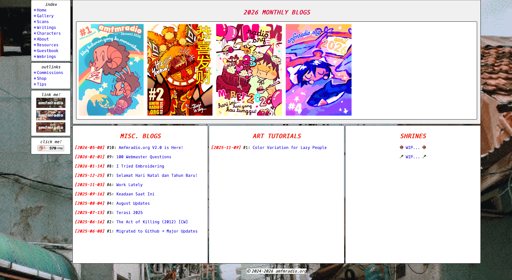
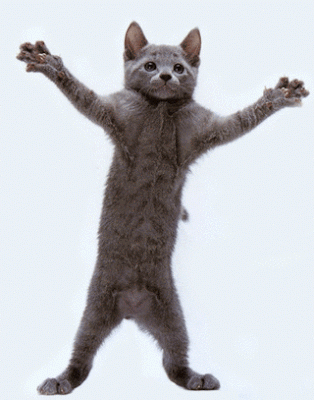

Prev ＊
[2026-05-08]
Amfmradio.org V2.0 is Here!

The final version one layout | August 2025 - May 2026

The new version two layout | starting May 2026!
Most of the cosmetic changes comes from the fact that I switched from doing tables with fixed pixel widths to grids with percentage or fraction widths. This video helped me so much in understanding how grid layouts worked, and I recommend it to anyone else who wants to learn how it works too. On top of that, the grid layouts switch according to the width of the browser window; on smaller windows, I've enlarged the font size and arranged the content around so everything can be on one easily scrollable column. No more annoying zoom-in zoom-out shenanigans on mobile! I've also beefed up a few of the page layouts. For instance, the about page is now way less claustrophobic. I do miss the compactness of it a little bit, but I think to be loved is to be changed... I also really had to seperate the webrings section into its own seperate page, because a bunch of webring mods couldn't find it easily on my site (understandably so...) The webrings section is still being updated and I've already contacted their respective mods to update my URL, so it will be a while until all of them show up properly on there.

Final version one | About page

New version two | About page
A big change is in the Writings page!!! Just look at the images - the old one was so boring and I've been meaning to make it look a lot better! Now that I'm doing monthly blogs with a cover every month I've had this idea to make a magazine rack of some sort to display the covers. It turns out that grids work really well to display this in place of iframes. Everything is still a little empty-looking (and I've still got to reformat the shrines I've made) but I'm sure that in the coming years, I'll have a lot more to share :)

Final version one | Writings page

New version two | Writings page
I was inspired by Derrek.org's scans page to make my own so that people can more easily look at my sketchbooks without having to download them (especially if they are on mobile). I think it turned out quite well! The PDF viewer should also work on any screen width. I've also got a brand new RSS feed up and running! I'm still kind of learning how this one works but if anyone's interested in keeping up on my site updates then you can save that. I've been meaning to make new site buttons too, but probably later. I'm tired from coding so much! You get new assets on the bottom of the index page for now. I'm 99% sure there's a few broken links here and there, so I'll spend the next few days cleaning up the site. But I'm happy with how everything turned out, and I hope you guys like it as well!

click me!

link me!


link me!
est. 2024 © amfmradio.org